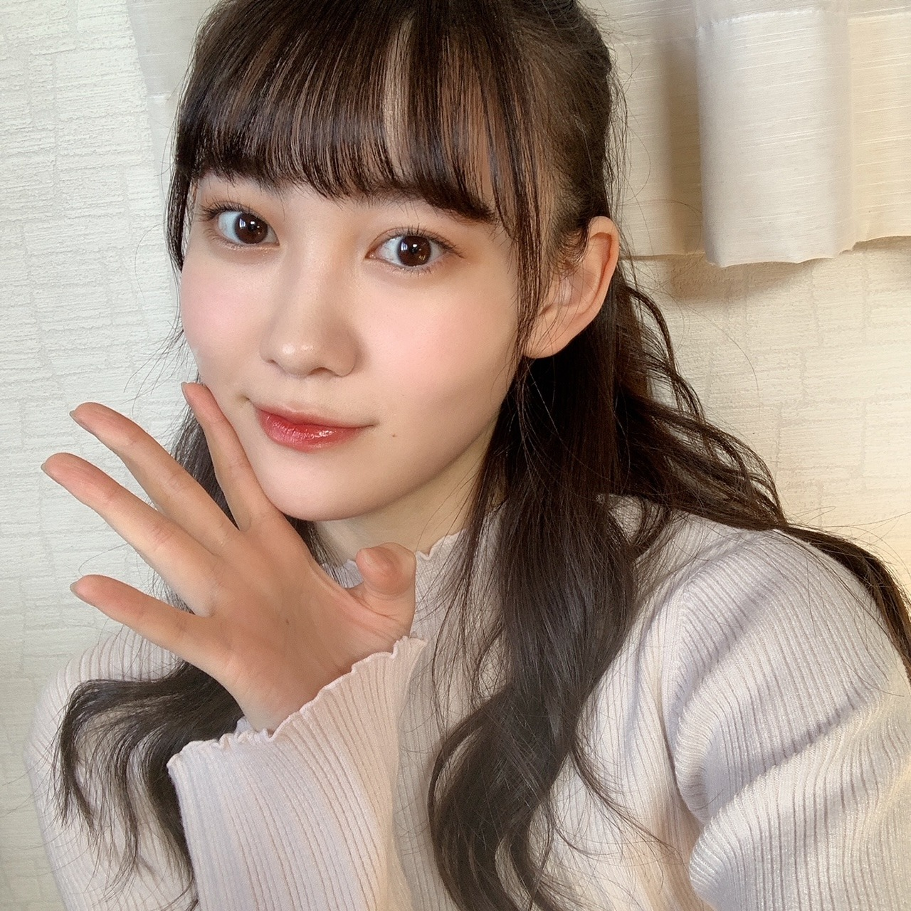

2020/1201Tue12！！ 松尾美佑
今日から12月がスタートしました！
太陽がご機嫌でルンルン気分です♪
そして12月スタートという事は同時にアドベントカレンダーもスタートしましたっ！
クリスマスまでの25日間、毎朝チョコを楽しみに寒くても早起き頑張ります☺︎
今日のチョコは甘いミルクでした
はい！
千葉県出身、高校2年生
16歳でいられるのもあと１ヶ月と2日！
松尾美佑です
まずは〜
昨日はのぎおびありがとうございました！
初めて2人でのぎおびをしました
まゆちゃんとね⸜❤︎⸝
ふふん(๑ت๑)
4期ライブに向けての発表、第一弾として！
昨日はユニットのメンバーを発表しました〜
似顔絵、似てましたかね？
レイちゃんが私が書いたレイちゃんの似顔絵を可愛いって喜んでくれていた様子です。
自信作だったので嬉しいです
今日は黒見ちゃん＆瑠奈ちゃん！
4期生ライブまでまだあと4つの発表があるので、みんなののぎおび見てくださいね¨̮
わくわくドキドキ(⸝⸝⍢⸝⸝)

はーふあっぷ
そして、
堀未央奈さんがご卒業を発表されました
新4期生が加入したばかりの時から近くに来てくださって優しさを分けてくださって、
AbemaTVさんでの白石さんクイズの時に御一緒させて頂いた時も、気さくに話しかけて下さったり笑顔を頂いて本当に嬉しかったです。
堀さんのアイドルとしての輝きも、
好きを発信出来る所も、
芯のある言葉も、
尊敬と憧れが沢山です。
堀さんのファッションもヘアアレンジもいつも大好きです！
ご卒業される日まで一緒に過ごせる時間を大切にします！！
そして！
昨日、11月30日！
伊藤純奈さん、お誕生日おめでとうございます！
純奈さんの歌声を初めて自分の耳で直接聴いた日から、純奈さんの歌声の美しさに惚れて大好きです！
純奈さんを見かける度にいつもキラキラとした笑顔をしていらっしゃって、優しい空気を纏っていて、お話出来たら嬉しいなといつも思っています！
素敵な一年になりますように願っています！

大きなぴーーーす
お返事〜
✽ 最近見た夢ってなに？
洗面所で自分で髪の毛を肩まで適当に切っちゃって
"あ...。"
"そのうち伸びるか！！！"
っていう夢を今日見て起きた時焦りました。
✽ 無事任務を終えた2020年の11月さんに一言。
ご苦労様でした、ゆっくり休んでくださいね
✽ 私もタンブリング出来るんだけど、バク転よりロンバクの方が楽な気がするの私だけ？みゆちゃんもですか？？
全力でそれなです！！！
ロンバクは勢いがあるからですかね
✽ ドラえもんの道具でなにが1番欲しいですか？
スモールライト！
自分を小さくしてドールハウスで暮らす
✽ 期末試験への意気込みを聞かせてください。
後悔しないように頑張る
って友達が言ってて良い言葉だ。って思いました。
私からは、
どーにかなる！！！！！
を差し上げます。
(まともな話をすると、テスト返しの時を想像して自分がにっこりできたらいいなと思うとがんばれます)
(あ、意気込みか)
(どーにかなる！！)
✽ 好きなおにぎりの具は何ですか？
ミュウランドの主食は
エビマヨおにぎりとたこ焼きおにぎりらしいという噂を耳にしましたよ |ᯅ̈ )
聞いてください聞いてください。
次の私のブログの日はついに4期生ライブの当日らしいですよ皆さん。
どきどきどきどきˊᵕˋ
楽しみです！
明日は〜
なお〜〜〜〜〜〜
まゆちゃんの書いたなお〜の似顔絵ほんとにそっくりだった(*¨*)♡
それでは！
4期生ライブで会いましょ〜
ミュウでした¨̮

同じ日の写真ばっかりですみません( ´∵｀)
ばいっっっっっっっ( Ꙭ )/''

PROFILE
新4期生リレー
202104
| SUN | MON | TUE | WED | THU | FRI | SAT |
|---|---|---|---|---|---|---|
| 1 | 2 | 3 | ||||
| 4 | 5 | 6 | 7 | 8 | 9 | 10 |
| 11 | 12 | 13 | 14 | 15 | 16 | 17 |
| 18 | 19 | 20 | 21 | 22 | 23 | 24 |
| 25 | 26 | 27 | 28 | 29 | 30 | |

コメント(192)
4期生ライブまであと5日だね〜
次のみゆりんブログの日ライブの日なんだね〜！
終わったあとに更新するのかな？？
私は用事があってライブ見れないけど
みゆりんがブログでお話してくれたらいいなって思ってるよ〜
✂︎- - - - - - - -キリトリ- - - - - - - - - - -✂︎
ハーフアップの写真可愛すぎるよ(⑉• •⑉)❤︎
今までの髪型も大好きだけど正直1番タイプかも☺︎
アドベントカレンダーをにこにこしながら開けてる
そんなみゆりんを思い浮かべながら私も寒い冬乗り切るね笑
(アドベントカレンダー買おうかな笑)
✂︎- - - - - - - -キリトリ- - - - - - - - - - -✂︎
テストとかいっぱいあってメンタル重症化しがちだけど
みゆりんブログ見る度に元気になる！
今日も質問(お願い)で終わりにするね！
【質問】
✽12月5日がGTECで6日が英検だから応援して欲しい！
✽くろみん、レイちゃん、みゆりんのユニットどうだった？
(ライブ終わりのみゆりんへの質問)
今日も素敵なブログをありがとう☺︎
また5日後(ライブ終わりの日)楽しみにしてる！
昨日のSRに癒された〜
ありがとう
4期ライブ頑張ってね
のぎおび観たよ。
早くライブ配信を楽しみにしてます。
ミュウちゃん頑張れ。
4期生ライブのチケット買ったよー(笑)
ユニットもあるんやねー！楽しみー(笑)
予想はスリフォ！美佑ちゃんのスリフォ見たいな〜(笑)
またね〜(笑)
あ、ミーグリいくよ〜(笑)
昨日はのぎおびお疲れ様！ホンマに白く光ってたな笑笑
ユニット何の曲やろ！楽しみや！
真佑ちゃんの似顔絵めちゃくちゃ上手かったな！！美佑ちゃんも充分上手よ！
そうか！次回は当日か！楽しみでやんす！
今日はこの辺で！またブログ更新楽しみにしてるばい！
栃木より愛を込めて。
ブログ更新お疲れ様！！！！！
ぜんかいのブログにコメント出来なかったので10日ぶりですね
のぎおび見ました。まゆちゃんとめちゃくちゃ仲良くて終始笑顔で楽しそうだなぁと思いながら見てました
あとは、ぬいぐるみと戯れてるみゆちゃんが可愛いかった
似顔絵そんなに当たらなかったけどみゆちゃん自信作のレイちゃんはわかったよ！ほんわかする可愛らしい絵でした。。
4期生ライブ楽しみにしてます！
あと、ミーグリも応募するね！！！！！
ではでは、また次回！
秋田より
みゆちゃん今日も可愛いです。
みゆちゃん今日も１日お疲れ様です。
今日はお仕事お休みでした。
今日はゆっくりと休むことが出来ました。
明日からは五連勤頑張ります。
これからもお仕事頑張って下さい。
自分もお仕事頑張ります。
これからのブログを楽しみにしてます。
似顔絵可愛かったです！
ライブ楽しみだなーって気持ちもありつつ、受験生だから見れず残念だなーって気持ちもありつつ、、、見れなくても全力で応援したいと思います！(و•o•)و＜ﾌｧｲﾄー
当日のブログ、楽しみにしています！！！
＊4期生の色んな方との写真とかあれば載っけてくれると喜んじゃいますヽ(*´▽)ノ
今日の写真たちを見て思ったのですが、
みゆちゃんのまつ毛、長くて、しっかり上がってて、完璧に可愛い！！！
＊みゆちゃん流、まつ毛の作り方を教えてくださいᐠ( ᐛ )ᐟᐠ( ᐖ )ᐟ
ライブ本番まであとすこし！体調にはほんとに気をつけてください☺︎︎︎︎応援していますᕙ( ˙-˙ )ᕗ
ブログ更新ありがとう！
4期生ライブすごい楽しみです！！
ハーフアップ！ めちゃくちゃ似合ってます笑
オンラインお話会が発表されましたね！
すごい楽しみだし絶対お話しに行きます！
待ってたよー！
少ない線で 似せられたら それは お上手よ 笑 。。
4期生ライブの日のブログ楽しみにしてるよー
今日から12月だね！1年早いなぁ！！！今年はstayhome期間とかもあったからいつもより早い！！！
僕はミュウちゃんと同い年で、高校2年生なんだけど、外に遊びに行ったりもなかなかできずに悔しい一年でした。でも乃木坂のパフォーマンスを見て日々元気をもらってました！
来年ミーグリが決まったね！リモートにはなるけどミュウちゃんと初のファンとのイベントなんじゃないかな？絶対ミュウちゃんに申し込むね！
最後に4期ライブ頑張ってね！！！
また５日後楽しみにしてるねー！
残念ながらその日予定があって僕は見ることはできませんが、美佑ちゃんが楽しんでパフォーマンスできることを祈っています！
オンラインミート＆グリートの発表がありましたね！
自分は就活関係と日程が被る可能性があるので今回は残念ながらパスする可能性が高いですが、いつか美佑ちゃんと話すことができたらなぁと思います。
最後に改めて4期生ライブ楽しんでください！
もうあっという間に12月だね！ラスト1ヶ月楽しも！
そして昨日ののぎおびお疲れ様！
絵も可愛らしくてすごく良かったよ！真佑ちゃんとも仲良くてすごく見てて楽しかったよ！
色んな先輩の卒業すごく悲しいけどみゆちゃんはみゆちゃんらしく、楽しく、良い乃木坂46Lifeを楽しんで欲しいです！応援してます！
あ、あと、ミートアンドグリート応募するよ！当たったらよろしくね！ミューちゃん！
12/6の4期生ライブ是非頑張って！そして楽しんでね！
楽しみにしてるよ！！
最後に質問！
・2021年に一番最初にしたいことは？
・4期生ライブの裏話、ちょっとお願い笑
よろしく！！
早くモバメと個人ブログ始まらないかな〜
写真いつものメイクと変えた？？
ミュウツー
四期生ライブの日は塾でテストなので
心の中で応援してます
今週末頑張ってください
ハーフアップかわいすぎる！
ホントに高校2年生かと思うぐらい綺麗だし、これからどんどん垢抜けて大人になっていくことを想像すると楽しみでなりません。
アドベントカレンダーの中に入ってるチョコ、溶けませんか？
去年、チョコのアドベントカレンダー買ったら、暖房つけてたのでめちゃくちゃ溶けてて、冷蔵庫に入れて冷やすわけにもいかず、結局1日で食べてしまいましたw
あ、チョコって、たくさん食べても鼻血出ないらしいですよ！
知ってました？
1日の摂取量はあるけど、食べ過ぎても鼻血は出ないので安心ですねw
最近また冷えがすごいですね。
コロナも少し活発になってきたので、体に気をつけてくださいね。
ファイティン
ー質問ー
・ついついやってしまう癖ってある？
・写真集を発売するならどこで撮影したい？
・気晴らしではよく何をする？
ありがとう！次回も楽しみにしているよ。
今日から12月。早いなぁ。
毎日チョコレート食べるのいいね。楽しみが増える！
街もクリスマス色強なってきた。
めっちゃ楽しみ！
のぎおびお疲れ様！！
ユニット発表やったとは。
どのユニットも新しい感じで楽しみ。
何の曲を披露してくれるのか予想しながら、当日までドキドキやね。
ミュウちゃんもリハ頑張って！
いよいよ今週日曜日。
その日は塾早めに切り上げて、家で待機しときます。
家でもテンション上げて楽しむ！！
当日はミュウちゃん担当の日！
ブログも待ってるね。
ではでは体調には気をつけて。
いつもありがとう。
昨日ののぎおび見たよ！真佑ちゃんとのわちゃわちゃ見てて終始癒されたし、ライブの企画発表の時の絵も可愛くて終始かわいいが続く時間だったな〜と思った！2人のやりとりを見てて、前の雑誌の対談もあったように2人の関係はしっかりあるんだなと見てて改めて思いました…
次の更新はライブ当日なんですね〜、これまた二重の楽しみで最高だな〜！アフター配信含めて最後まで見させていただきます！次の更新楽しみにしてます！お疲れさん！
ブログ更新ありがとうございます^ ^
ミーグリの日程発表されましたね！
みゅうちゃんとたくさんお話ししたいな、
お話できるといいな❤︎
ミーグリの日程がチアリーディングの大会が終わったらすぐなの！だからチアのこととか話せたら嬉しいな！！！
質問です☀︎
こういうことお話ししたいな〜みたいなことはあったりしますか？？
今年の冬はどういう服をたくさん着たいですか？？
4期生ライブ頑張ってください！
ずっと応援してます♡
いよいよ今週末は4期ライブだね♪
チケット用意して遠くから応援するから頑張ってね！
今日もニット姿可愛いから、同じ日に撮った写真で問題ないよ◎
それといよいよミーグリ発表されたね♪
ミュウちゃんとお話できるのずっと待ってたから嬉しいな◎
早くライブの感想伝えたいけど、まずは本番頑張ってね！
かわいいよ(*´ω｀*)
チャァオ〜〜〜!☆彡
ミュウちゃん、こんばんは〜〜❕❤️❤️❤️❤️❤️笑顔
寒い日が続いていますけど〜
ミュウちゃんは、元気そうですねぇ〜〜⤴️⤴️⤴️❕❤️❤️❤️❤️❤️笑顔
そう言えば〜〜この前の猫舌ショールーム〜〜・・
ミュウちゃんのお顔が〜〜めちゃめちゃ〜お忙しくて、ずっと見ながら〜〜
笑ってしまいました〜〜❕❤️❤️❤️❤️❤️笑
いつも、あんなに〜〜⤴️⤴️⤴️
表情が豊かなんですかあああ〜〜〜⤴️⤴️⤴️❕❔❤️❤️❤️❤️❤️笑顔
ミュウちゃん・・また、次回も楽しみにしています❕❤️❤️❤️❤️❤️笑顔
(＠＾▽゜＠）ゞ❤️❤️❤️
❇️❇️おすまし！⚜️❇️⭐彡
なんだか、最近は猫舌やのぎおびとかで動いているみゆちゃんがたくさん見ることができて、とっても幸せです♡特に猫舌SHOWROOMを見ていて、みゆちゃんは思っていた以上にとても表情豊かな子だなと思いました（笑）動画だとよりみゆちゃんの魅力を知ることができました！もうすぐ、4期生ライブもありますね。推しメンタオルを持って全力で応援します！
質問
今日のブログ写真のメイクがすごい好きです！特にリップが可愛いなと♡よかったら、どこのリップか教えて下さい。メイク道具紹介とかしてほしいです。
よろしくお願いします！
中学生の女子です！
初めてコメント書かせてもらいます！♡
昨日ののぎおび見ました！
まゆたんとみゆちゃん、2人とも最近気になっていたので、すごい嬉しかったし、楽しかったです！
みゆちゃんの絵、うまかったよ〜！
4期生ライブ、頑張ってね！！
未央奈ちゃんの卒業、寂しいね…
残された時間を全力で楽しんでください！
新4期のみんなはメンバーのお誕生日をブログの中でお祝いしてくれて、いつも私まで心があったかくなってます♡
のぎおびお疲れ様でした。イラストは正解を知ってから見ると、似てると思うんですけど、クイズはあてられませんでした。
おにぎりの具にタコ焼き？変わってますよね、でも近頃のグルメは変わったのもチョイチョイ出てくるので、それもアリなのかなとも思います。
いつも聞いてるラジオのコーナーで逆さワードクイズってのがあって説明省略しますけど、リスナーから送られたワードを出題者が逆さから読んで、回答者がメモなど取らずに正解を言い当てる感じのをクイズ番組を4期生全員でshowroomかどっかでやってみませんか？勿論出題者も4期生でなんかやんちゃんの珍回答とか珍出題(答えを先に言っちゃいそう)とか楽しそうな気がします。
ライブ当日にブログ当番も大変ですよね！体調には気をつけて頑張って下さいね！
おやすみ
初耳でやんす。
のぎおび、見たよ～。
メンバーにしかわからない微妙な差。絵
そのものは上手だけど、見分けるのには
相当な鍛錬が必要かも。
それにしてミュウちゃん、色が白い。
昨日ののぎおびでも証明されましたね。
今回の写真のミュウちゃん、お姉さんぽ
くて素敵です。
ばいいいっ。
いよいよ4期生ちゃんライブですね。
みゅうちゃんの歌って踊る姿を応援しているよー
いっぱい楽しんでね！
またね:-)
コメントする